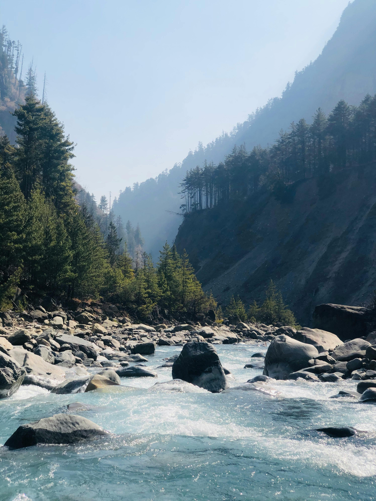
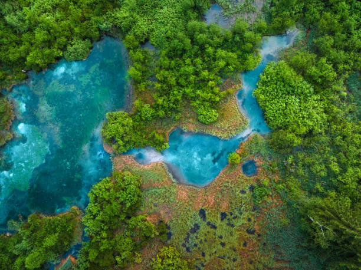
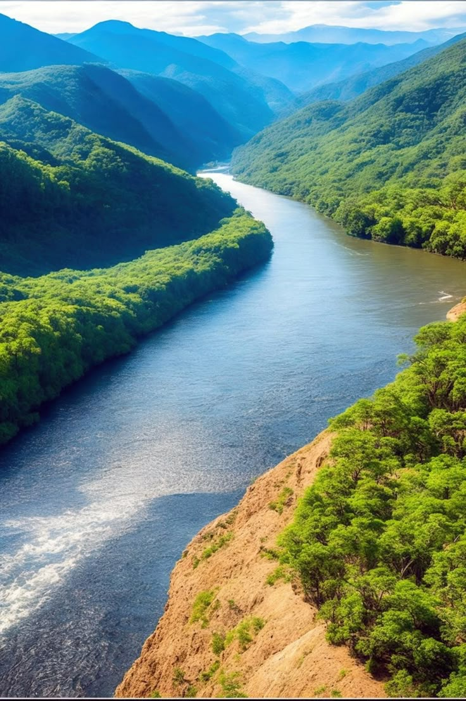
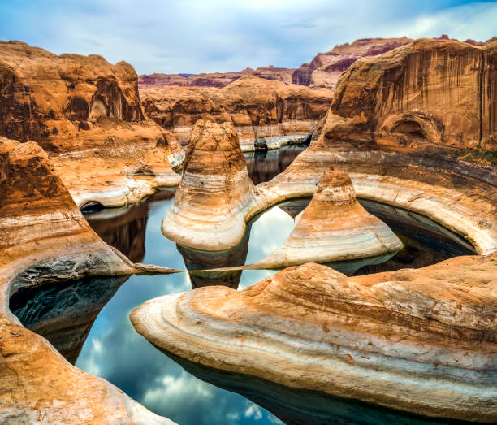

The Thunderstrike River
The raging currents of the Thunderstrike River roar through the rugged canyons of Stormhold, carving a thrilling path for adventurers seeking the ultimate white water rafting experience. From the moment the raft plunges into the frothy rapids, riders are tossed and spun by powerful waves and sudden drops that challenge even the most seasoned rafters. Jagged rocks and swirling whirlpools demand sharp reflexes, while towering cliffs echo the wild calls of eagles soaring overhead. Between the adrenaline-pumping rapids, calm pools offer brief respites, reflecting the fiery hues of sunset before the next rapid surge. The Thunderstrike is a wild force of nature—unpredictable, exhilarating, and utterly unforgettable for those daring enough to conquer its white waters.
The Silverfang River
The roaring currents of the Silverfang River slice through the dense wilderness like a silver blade, offering rafters breathtaking scenery. Towering pine trees line the banks, their reflections shattered by rapids that surge with relentless energy. Each rapid brings a new challenge—turbulent waves crash over rocks, creating sudden drops and swirling eddies that keep every paddler on high alert. Between heart-pounding stretches, gentle stretches of calm water allow rafters to catch their breath and enjoy mountain air. As the sun filters through misty spray, the Silverfang reveals itself as a wild, untamed river where adventure and nature collide in perfect harmony.
The Crimson Rapids River
The Crimson Rapids River slices fiercely through the rugged highlands, its fiery-red tinted waters rushing over jagged boulders and narrow gorges, creating a white-water playground for thrill-seekers. From the first drop, rafters are thrust into a wild dance of swirling currents and crashing waves that test every ounce of skill and courage. The roar of the rapids echoes against towering cliffs, while bursts of spray cool the sun-soaked adventurers as they navigate tight turns and sudden drops. Between the intense rapids, crystal-clear pools invite brief moments of calm, where the vibrant wildflowers along the banks sway gently in the breeze. Bold and untamed, the Crimson Rapids River promises an unforgettable adventure for anyone chasing the rush of the white-water wilderness.
The Thunderclaw River
The Thunderclaw River barrels through the jagged wilderness like a beast unleashed, its frothy rapids smashing against ancient rocks with thunderous force. Rafters are swept into a relentless rush of swirling eddies, powerful waves, and sudden drops that demand fierce focus and teamwork. Mist rises from the crashing white water, mingling with the scent of pine and wildflowers that cling to the steep canyon walls. Between heart-stopping rapids, calm stretches offer a brief chance to catch your breath and marvel at the untouched beauty surrounding the river’s roaring path. The Thunderclaw is a wild, raw adventure — perfect for those who crave the ultimate test of skill and courage on the untamed water.